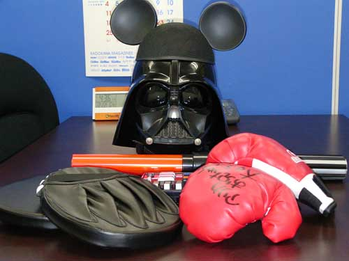
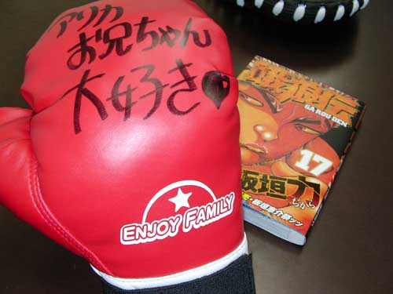

| 2005/12/22 : 一ヶ月遅れ(きのこ) |
| 今日がファウストＶｏｌ．６（Ｂ）の発売日なのでした。 人を殺せる本です。持ってみれば分かります。おかげで読んでると左手が麻痺します。 さて。 サイドＡの発売日は奇しくもワタクシの誕生日だったりして、社内のみんなからプレゼントをもらいました。  画面の黒い人系のがそれです。（一部、自分の持ち物でアレンジを加えております） それプラス、数日後「読んだ」とバースデーカードを添えて、虚淵の兄貴がプレゼントをくれました。画面の赤い系がそれです。 拡大するとこうです。  （大きさを表現する為の対象物含む） ホロウマスターアップに締め切りが重なってアレだったけど、これだけでやった価値はあるよママン！ ありがとうありがとう！ ……つーかぁ、エンジョイファミリーってのがまた泣ける……。 また、こやまさんの所で今回の没カットとかラフ画とかある模様。 HandSは「まったりと重苦しい話の最後にポップな絵で落とす」というコンセプトだったのですが、書き上がってみればそういう芸風でもなくなったらしいので、泣く泣く最後の妹ちゃんは没カットにしたのだった。 |